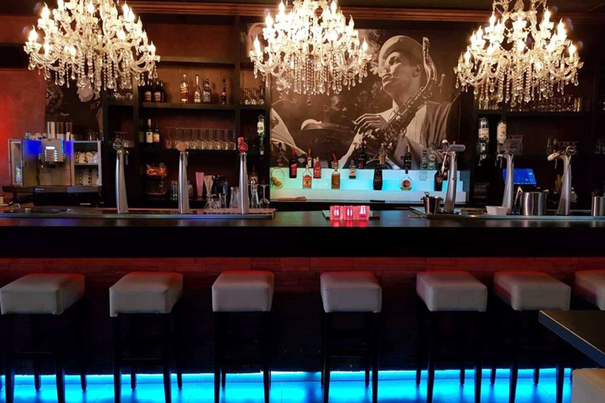

Grand Café in de Molenstraat, Veghel
Sax and Jazz
Een sfeervolle avond aan de bar of aan tafel, met onbeperkt tapas en regelmatig live muziek op ons podium.
Donderdag tot en met zondag geopend vanaf 17:00
Leer ons kennen
Zin in een sfeervolle avond met Nederlands eten in ons mooie restaurant? Daarnaast vindt u bij ons lekkernijen uit de Amerikaanse, Franse en Zuid-Amerikaanse keuken.
Sax and Jazz is een trendy eetcafé in Veghel. Je kunt hier terecht om lekker te dineren of om gezellig een drankje te nuttigen. Geniet op warme dagen van onze plezierige zitplaatsen buiten; binnen zorgen onze goed geklimatiseerde ruimtes voor een aangenaam verblijf.
- Prettige ambianceStijlvolle ruimtes, een lange bar en kroonluchters.
- Plaats voor grote groepenVan borrel tot bruiloft.
- Internationale keukenMet veel mogelijkheden.
- Podium en regelmatig live muziekJazz hoort hier gewoon bij.
Onbeperkt tapas
voor 39,50
Maximaal 2 gerechten per bestelronde. Bestel zo vaak als u wilt.
Eerste set
- Tomatensoep
- Javaanse kippensoep
- CarpaccioRucola, parmezaanse kaas, pittenmix en een dressing van mosterd-dille
- Serrano hamMet olijven
- AlbondigasSpaanse pittige gehaktballetjes in tomatensaus
- KipsaladeGemengde salade met warme kip
- Fried shrimpsGefrituurde garnalen en chilisaus
- NachosGekruid gehakt en gesmolten kaas
- Crispy chickenMet truffelmayo
- Mandje friet
- Bakje nasi

Tweede set
- Black Angus beefChampignon- of pepersaus
- Gegrilleerd spiesje van beefMet grillkruiden
- Kip satéSaté van kippendij met huisgemaakte satésaus
- VarkenshaasMet chimichurri
- Gamba'sIn tomatensaus
- Gamba'sIn teriyakisaus
- Kip creoleIn chili gebakken kipstukjes met paprika en uien
- SpareribsHuisgemarineerde spareribs
Allergie of een dieetwens? Laat het ons even weten. Originele menukaart (PDF)

Liever thuis eten?
Profiteer van onze afhaalservice, of laat het eten bezorgen. Bestellen gaat via onze eigen bestelsite.
Feesten, groepen en catering
Voor bedrijfsfeesten, recepties, borrels, feesten en vergaderingen bent u van harte welkom. En voor bruiloften, verjaardagsfeestjes of het familiefeest maakt onze cateringservice er een onvergetelijk event van. Grote festiviteiten zoals bruiloften zijn voor ons geen probleem.
- Bedrijfsfeesten
- Recepties
- Borrels
- Vergaderingen
- Bruiloftsrecepties
- Verjaardagen en familiefeesten
- Buffet
- Catering
Kom gerust langs met uw wensen en vragen, of stuur ons een bericht.
Openingstijden
| Maandag | Rustdag |
|---|---|
| Dinsdag | Rustdag |
| Woensdag | Rustdag |
| Donderdag | 17:00 - 23:00keuken 17:00 - 21:00 |
| Vrijdag | 17:00 - 00:00keuken 17:00 - 21:00 |
| Zaterdag | 17:00 - 00:00keuken 17:00 - 21:00 |
| Zondag | Geopendbel even voor de tijden |
Een tafel reserveren
Reserveer heel eenvoudig een tafel bij ons. Bel ons, dan zetten we u erbij.
Bel 0413 785 394Goed om te weten
Betalen
Contant, pinpas, contactloos, VISA, Mastercard, AMEX, PayPal, bankoverschrijving en cadeaukaarten.